Место и логистика
(филиал ФГБУ ФНКЦ МРиК ФМБА России)
Хронометраж
• М.В. Забелин — зампред Правительства МО, министр здравоохранения МО
• А.А. Кирюхин — министр социального развития МО
Присутствует: Е.Г. Швелидзе — министр информации и молодёжной политики МО.
- кабинет персонализированного цифрового обследования;
- блок когнитивного здоровья и коррекции аддитивных состояний — технологии психологии и нейропсихологии;
- центр протезирования, «школа ходьбы»;
- лаборатория нейротехнологий, отделение цифрового протезирования;
- центр дистанционной реабилитации;
- центр адаптивного автомобильного карт-спорта;
- интерактивная зона в спортивном блоке — работа с бойцами СВО;
- работа волонтёрского корпуса.
Переход к автодрому — через центральный холл на улицу, по ходу — знакомство с АРТ-терапией («школа цвета»).
Комментируют: И. И. Ларионова (гендиректор ФНКЦ МРиК ФМБА), И. А. Яроцкая (директор центра).
Комментирует: Р. Т. Гайнутдинов, исполнительный директор «Автошкола для СВОих».
Приветственные слова: Мединский, Скворцова, Цивилева, Мурашко, Воробьёв, губернаторы Бабушкин (Астрахань), Шапша (Калуга), Ведерников (Псков), депутат ГД Киселев, Ефанов (ВТБ), Фурсенко (фонд «Высокотехнологичная медпомощь»), Когогин (КАМАЗ).
Вручения:
- Скворцова + Цивилева — ключи от адаптированных авто (2 чел.);
- Савелов (ГАИ) + Когогин (КАМАЗ) — водительские права (2 чел.);
- Марш автомобилей;
- Скворцова — ведомственные награды (5 чел.);
- Рожков — награды спортсменам-участникам СВО (3 чел.);
- Военный оркестр и ансамбль «Жёны героев» — 2 песни.
Нажмите на карточку — откроется краткая справка о персоне.
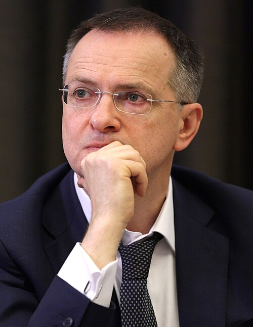
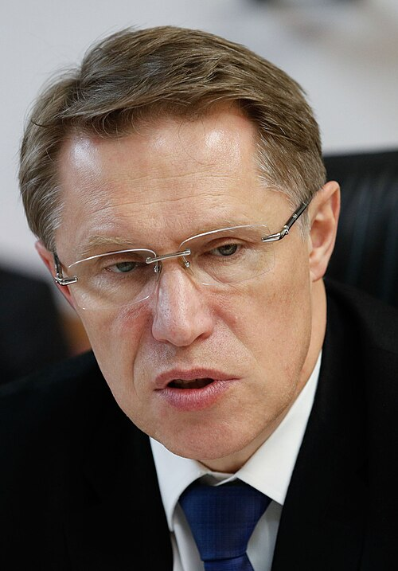
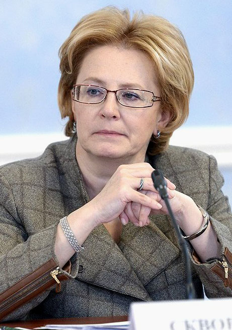
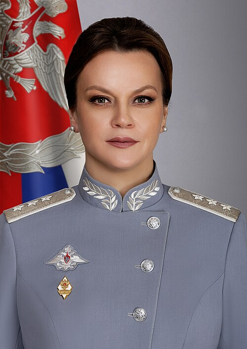
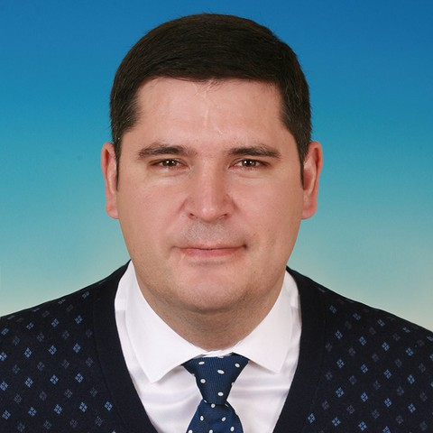
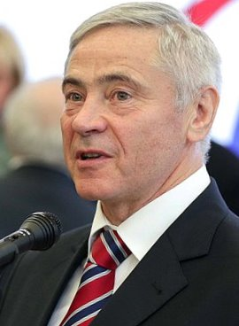
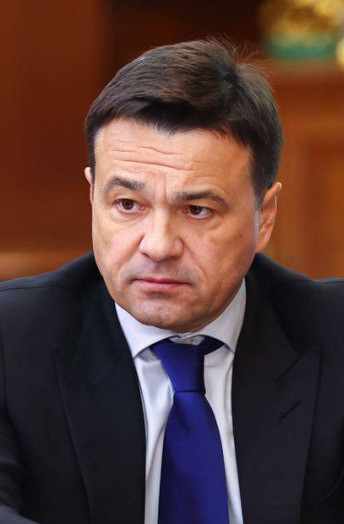
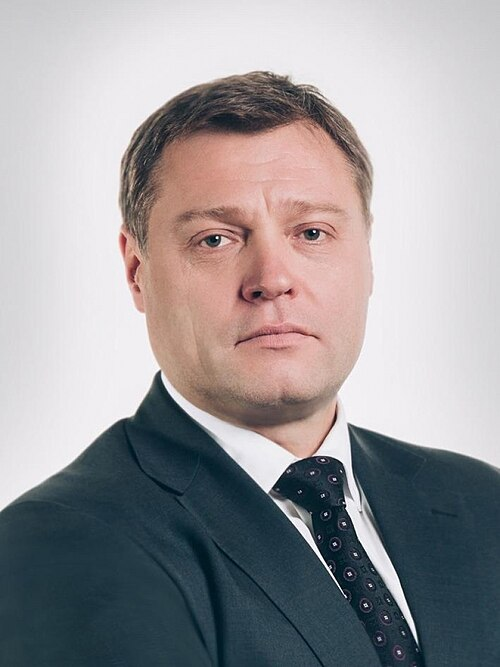
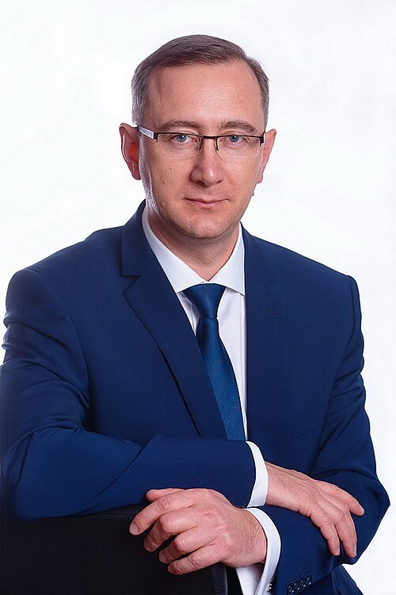
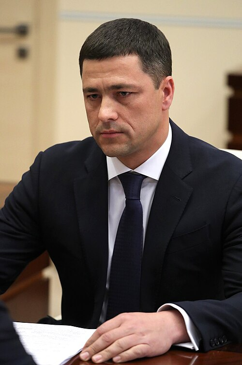
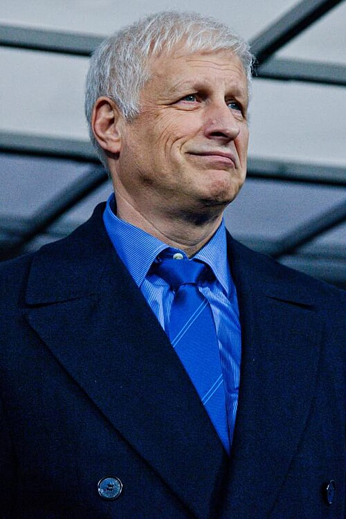
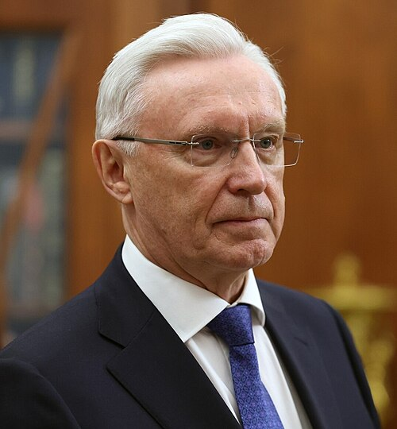
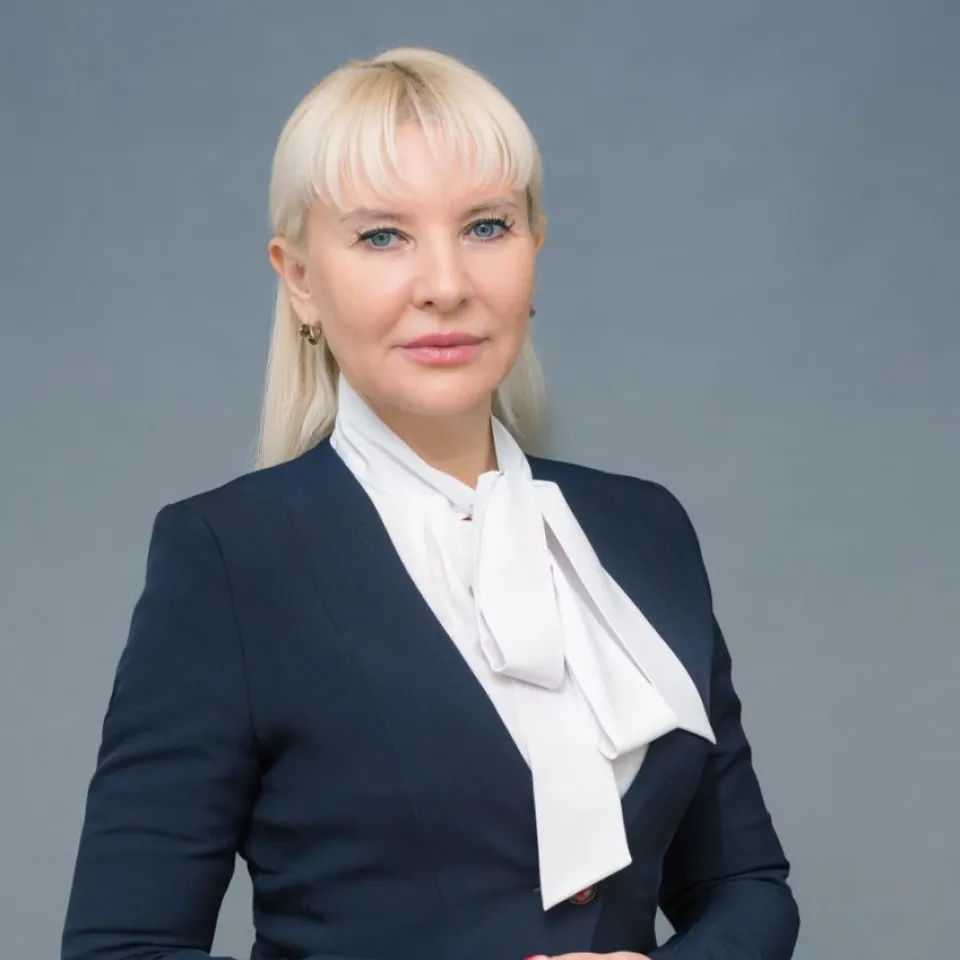
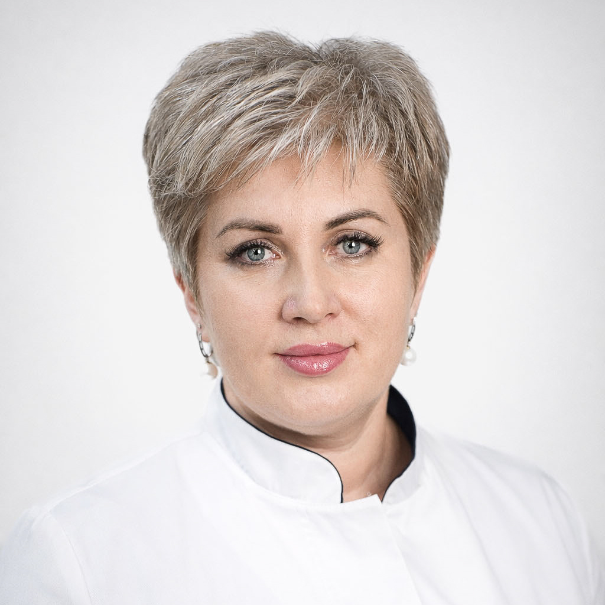
МНПЦ КР «Голубое» — ключевое
Коечный фонд — 530 коек
Что покажут (маршрут осмотра)
- Центр трансляционной реабилитации — лаборатория нейротехнологий, отделение цифрового протезирования, дистанционная реабилитация.
- Кабинет персонализированного цифрового обследования — стартовая точка маршрута.
- Блок когнитивного здоровья — коррекция аддитивных состояний, VR-терапия, нейропсихология.
- Центр протезирования и «школа ходьбы». С января 2025 г. — собственный модуль протезного предприятия (полный цикл).
- Центр адаптивного автокарт-спорта — новая линия АФК.
- Автодром «Автошколы для СВОих» — вождение адаптированного авто и «КАМАЗа».
- АРТ-терапия / «школа цвета» — по ходу перехода.
Ключевые методики
- Роботизированная механотерапия, тренажёры с БОС.
- VR-технологии и нейроинтерфейсы для когнитивной реабилитации.
- Индивидуальные протезы с микропроцессорным управлением.
- Мультидисциплинарные бригады — единая программа восстановления.
- «Эрго-квартира» — отработка бытовых навыков самообслуживания.
- Совместные программы с Паралимпийским комитетом России.
Партнёры по профобучению
- ГБПОУ МО «Колледж “Подмосковье”»
- ФГБОУ ДПО «Институт развития профессионального образования»
- ФГАОУ ВО «Государственный университет просвещения»
- Фонд «Защитники Отечества» — реабилитация ветеранов СВО и их семей
- Паралимпийский комитет России — регулярные паралимпийские уроки
МФЦ на территории
С февраля 2026 г. специалист МБУ «МФЦ г.о. Солнечногорск» еженедельно ведёт выездной приём. Ежемесячно — 75–80 военнослужащих, около 40 госуслуг. Самые востребованные: паспорт РФ, СНИЛС, кабинет Госуслуг.
Результаты реабилитации
Профиль риска: ПТСР — 45%, тревожные — 10%, аффективные — 5%. 91,8% хотят вернуться к прежней профессии, 37% — получить новую специальность.
Другие площадки реабилитации СВО в округе
- Тимоновский госпиталь (Минобороны РФ) — с начала СВО ~3 900 раненых принято.
- ФНКЦ РР (Лыткино) — нейрореабилитация после тяжёлых ЧМТ, длительная ИВЛ.
- Санаторий «Солнечногорский» — в 2025 г. 2 036 участников прошли реабилитацию; сейчас 150 военнослужащих (18 из МО).
- Солнечногорская больница — отделение сочетанной травмы 40 коек, за полгода 609 пациентов; реабилитация СВО: 15 в 2025, 78 в 2026.
- Госпиталь ветеранов войн МО — план открытия отделения реабилитации СВО на 30 коек.
- Стоматологическая поликлиника — льготное протезирование СВО с конца 2025 (3 чел.).
Личный состав — сводные данные с начала СВО
С начала СВО по настоящее время. Доля уволенных от убывших: 13,9% (контракт — 15,0%, мобилизация — 10,8%).
Ассоциация ветеранов СВО — г.о. Солнечногорск
Гуманитарная и социальная работа
- Ежемесячно — ~50 тонн гуманитарной помощи в зону СВО (РЭБ «Покров», вода в ДНР/ЛНР).
- Еженедельно — продуктовые наборы 40+ семьям на патронаже.
- Юридическая помощь и правовая поддержка бойцов и семей.
- Постоянно работающий психолог, адвокат.
- Помощь в поиске пропавших без вести, трудоустройстве, бытовых вопросах.
- Курирование двух подшефных школ ЛНР — Луганская вечерняя школа и ДЮСШ «Заря».
- Женсовет — 20 участниц (руководитель — Кристина Авдалян).
Особые проекты
- Яхтинг с АНО «Мир человека» — выход на озеро Сенеж для бойцов с ампутациями.
- Картинг — включая бойцов с ампутированными конечностями.
- Обучение в мастерской «Сенеж», программа «Поколение чести» — 4 чел. (февраль 2026).
- Поступление в ВУЗ — 5 членов Ассоциации.
- Уникальные концерты: «Музыка войны», Куприк, Цыганова, Паскаль, Р. Газманов — на безвозмездной основе.
Трудоустройство участников СВО (2025–2026)
Трудоустроенные
Администрация округа и МКУ (9 чел.)
- Веринский Д. М. — МКУ «Солнечногорск-Транссервис» / МКУ ХЭС, водитель (с 25.10.2024).
- Даурова Ж. К. — МКУ «Департамент инвестиционного развития» (декрет).
- Бакланов А. В. — МБУ «Возрождение», методист (05.08.2025), инвалидность по СВО.
- Сенцов А. В. — МБУ «Возрождение», спец. по молодёжи → и. о. директора с 05.12.2025.
- Шапошников В. А. — МБУ «Возрождение», зам. по безопасности (06.02–21.05.2026), 25.05.2026 ушёл на СВО.
- Алиханов М. М. — Администрация → нач. управления ФКиС с 04.10.2025, уволился 22.05.2026.
- Калинин А. В. — Администрация / зам. директора МКУ «ХЭС» (17.12.2025), трудовой договор приостановлен (заключил контракт).
- Воробьёв Д. В. — Советник администрации на общественных началах (с 22.10.2025), руководитель Ассоциации ветеранов.
- Лебедев С. А. — МБУ «ДЕЗ» г.о. Солнечногорск.
Бизнес и коммерческие структуры (6 чел.)
- Ларькин Д. С. — мебельная фабрика, Хметьево.
- Сергунов Д. А. — ООО «Чистая вода», оператор (09.02–03.04.2026).
- Афонин С. А. — «Мострансавто», водитель (03.10.2025).
- Шендаров В. В. — ООО «Фарбраум», оператор (16.02.2026).
- Сергеев Е. О. — ООО «Чистая вода», комплектовщик (22.04.2026).
- Бушин С. А. — ООО «Королевская вода», помощник рук. службы безопасности.
ИП / самозанятость (3 чел.)
- Назаровец Ю. В. — сбор документов в Фонд микрофинансирования «Начни своё дело».
- Воробьёв Д. В. — займ 2 млн ₽ (2025), в 2026 — субсидия на компенсацию затрат.
- Барков В. Г. — помощь с бизнес-планом для соцконтракта.
Меры поддержки бизнеса СВО
2025: 14 экскурсий на предприятия округа + 5 экскурсий промтуризма для семей СВО.
2026: 7 экскурсий промтуризма для семей и участников СВО.
Медицинская сеть округа — по принадлежности
Округ обслуживают учреждения 3 уровней подчинения: федеральные (ФМБА, Минобороны), региональные (МО), Департамент здравоохранения Москвы. Ниже — полный перечень с ОПФ.
МНПЦ КР «Голубое»
Полное наименование: Многопрофильный научно-практический центр комплексной реабилитации «Голубое» — филиал ФГБУ «Федеральный научно-клинический центр медицинской реабилитации и курортологии ФМБА России».
Директор: Яроцкая И. А., к.м.н. Адрес — пгт Голубое, ул. Родниковая, 6/1.
230 коек СВО, 270 гражд., 30 реанимация. С января 2025 — модуль протезного предприятия. 4 578 участников СВО прошли полный курс.
Тимоновский госпиталь
Полное наименование: Филиал № 2 ФГКУ «1586 Военный клинический госпиталь» Министерства обороны РФ.
Начальник: полковник м/с Стеценко Б. Г. Адрес — д. Тимоново, ул. Подмосковная, 7. 27 отделений.
С начала СВО принято ~3 900 раненых. Направления: хирургия (в т.ч. пластика лица), травма-ортопедия (минно-взрывные), реанимация, ВВЭ.
ФНКЦ реаниматологии и реабилитологии (Лыткино)
Полное наименование: ФГБНУ «Федеральный научно-клинический центр реаниматологии и реабилитологии».
Директор: чл.-корр. РАН, проф. Гречко А. В. Адрес — д. Лыткино, 777.
Специализация: критические/хронические критические состояния, тяжёлые ЧМТ, длительная ИВЛ, нейрореабилитация. Экзоскелеты, ФЭС, 3D-импланты, нейроинтерфейсы. Основан в 2014 г.
Санаторий «Солнечногорский» (СКК «Подмосковье»)
Полное наименование: Филиал ФГБУ «Санаторно-курортный комплекс “Подмосковье”».
35 врачей 13 специальностей, 72 медсестры. Медицинская и медико-психологическая реабилитация военнослужащих, санаторно-курортное лечение военных пенсионеров и семей.
В 2025 г. реабилитацию прошли 2 036 участников СВО. Сейчас — 150 военнослужащих (18 из МО). Пилот «Вместе на смене» со Школой №5.
Туберкулёзная больница им. А. Е. Рабухина
Полное наименование: ГБУЗ «Туберкулёзная больница имени А. Е. Рабухина Департамента здравоохранения города Москвы».
Главврач: Шеремета Александр Николаевич. Адрес — г. Солнечногорск, ул. Рабухина, 7.
Диагностика/лечение туберкулёза, в т.ч. с МЛУ и ВИЧ-сочетанием. Профильные отделения: пульмо-туберкулёзные, торакальная хирургия, реанимация, лаборатория (МГ-тесты), физиотерапия. История — с 1938 г. (детский костно-туберкулёзный санаторий).
Солнечногорская больница
Полное наименование: ГБУЗ Московской области «Солнечногорская больница».
Главврач: Борисова Лариса Николаевна. Обслуживание — 144,5 тыс. жителей.
Основной корпус (411), инфекционный (35), Менделеево (30), Ржавки (55). Амбулаторно: 7 поликлиник, 4 амбулатории, 21 ФАП. 364 врача, 636 средний персонал; укомплектованность 97%.
Оборудование 2026: 1 078 ед. на 84 млн ₽. 3-уровневая реабилитация (ОРИТ + 60 коек + 5 дневного + 5 СВО). Экзоскелет ExoAtlet, Kinetec, ORTORENT, ORMED, ЭКЗАРТА.
Травмоцентр I уровня. Отделение сочетанной травмы 40 коек — 609 пациентов СВО за полгода. ЦАОП + пилотный скрининг рака лёгкого (+17% выявляемости). 310 родов за период.
Госпиталь ветеранов войн МО
Полное наименование: ГБУЗ Московской области «Московский областной госпиталь для ветеранов войн».
Начальник: Яроцкий Сергей Юрьевич. Профили: гериатрия (210), кардио (40), ортопедия (45), неврология (45).
2025 г.: 10 873 пациента, хир. активность 76,5%, малоинвазивно 41,4%, летальность 0,08%, госзадание 103%. Амбулаторно — 4 925 пациентов, денситометрия — 1 753.
Достижение: I место в РФ — «Лучший госпиталь ветеранов войн». Пилот Минздрава РФ по гериатрическим кабинетам — срок госпитализации пожилых сократился на 11,3%.
Планы 2026–27: отделение реабилитации СВО (30 коек), КТ, МРТ, 24 ед. реаб. оборудования (Стэдис, Биокинект, Орторент), Центр здорового долголетия.
Солнечногорская стоматологическая поликлиника
Полное наименование: ГБУЗ Московской области «Солнечногорская стоматологическая поликлиника».
Главврач: Абаджян Виолетта Николаевна, к.м.н. Единственная гос. стоматология округа. Адрес — Сенежский пр., 2, 1 этаж.
За 7 мес. 2026: 24+ тыс. пациентов (+10%), детская стоматология +14%. Мощность — 145 посещений в смену. Ожидание неотложной — ~20 мин.
Онкоскрининг 2026: 6 000+ осмотров, 10 подозрений на ЗНО (+20% охват). Льготное протезирование СВО с конца 2025 — 3 чел. В 2026 — интраоральный сканер и цифровое моделирование улыбки. Ремонт требуется (последний в 2014).
Солнечногорская подстанция скорой помощи (МОССМП)
Полное наименование: Солнечногорская подстанция + Поваровский пост ГБУЗ МО «Московская областная станция скорой медицинской помощи».
Заведующий: Рахманов Артём Викторович. Обслужено 29 855 вызовов (12 539 экстренных + 17 316 неотложных).
Укомплектованность мед. персонала — 85%, водителей — 72%. Компенсация аренды 30 000 ₽ — 53 сотрудника; муниц. проезд 4 500 ₽ — 53 сотрудника.
Меры поддержки медработников (округ)
- Компенсация аренды жилья 25 000 ₽/мес — 6 врачам Солнечногорской больницы, 2 сотрудникам скорой.
- Компенсация проезда 4 500 ₽/мес — 9 врачам больницы, 53 сотрудникам скорой.
- Региональные: соципотека (50% первоначального взноса), земельные участки, доплаты молодым (15 000 ₽ врачам, 7 000 ₽ среднему).
- Федеральные: «Земский доктор» — 1 млн ₽, ССВ — 29 000 ₽/мес врачам ЦРБ, 11 500 ₽ врачам скорой.
Мемориальное захоронение участников СВО
Муниципальное кладбище Обухово, 9,3 га. В 2022 г. созданы 2 обособленные зоны для воинских захоронений.
Распределение мест упокоения
Хронология благоустройства
- мощение тротуарной плиткой;
- ключевые архитектурные элементы: поклонный крест, входная арка, беседка для прощания, памятные стенды;
- обустроена зона тишины и уединения — лавочки, урны, туи.
Кто ведёт работу
🏘️ Татищево — возможные вопросы Губернатора
🛣️ Дорога к Шахматово — капитальный ремонт
Объект
- Название: автодорога М-10 «Россия» — Болдино — Шахматово
- Протяжённость: 7,031 км
- Площадь: 34 951 м²
- Балансодержатель: ГБУ МО «Мосавтодор»
- Контракт ведёт: Центральный аппарат РУАД
Сроки и силы
- Заключён: март 2026
- Первоначальный срок: октябрь 2028 → сокращён до ноября 2027 (выиграли год)
- Статус: ведутся работы по трём участкам
- Техника: 12 ед. (кроме транспортных СР и коммунальной)
- Рабочие: 50–60 чел.
- Подрядчик: ООО ИСК «Кубанское»
⚠️ Справочно — второй объект подрядчика
Подрядчик ООО ИСК «Кубанское» параллельно ведёт дорогу Поварово — Белавино. На ней работы не ведутся — может быть вопрос.
🏘️ С.п. Татищевское — оперативная сводка
🌳 Парковая зона
- Статус: передана округу
- Сделано: работы по расчистке проведены
- Обременение: на ЗУ годовых работ нет
🔥 Газ / котельная
- Котельная: построена (подтверждено Ильёй)
- Ожидается: подвод трубы от Мособлгаза
- Срок: сентябрь 2026
⛺ Детский лагерь
- Блокирует: ожидаются изменения в ГП (генплан)
- Далее: заход на предоставление через МАИП
- Статус: в ожидании
🌲 Лесопарк Татищево
⚠️ Риск: объект «Устройство лесопарка» в ГП на 2026–2027 отсутствует — бюджета на СМР по благоустройству нет.
- 2025 — проект и расчистка выполнены: концепция (35,36 млн ₽, ООО «АБ “Проект”») + расчистка территории (40,84 млн ₽, ОАО «CCY-5») — оплачено полностью.
- Концепция: прогулочный лесопарк в зоне охраны ОКН «Усадьбы В.Н. Татищева» — маршруты, площадки, пирс, кафе. Прошла общественные слушания, поддержана.
- 2026: выделено только 1 млн ₽ на видеонаблюдение — ещё не торговали, согласовываются точки и ТУ на подключение.
Подготовка к ОЗП 2026/2027
По состоянию на 21.08.2026
Паспорта МКД (ЖКХ-Контур)
Тепловые сети — гидравлические испытания
Котельные (68 всего)
Социально значимые объекты (СЗО)
Устранение замечаний мониторинговой группы ОЗП
Общий процент устранения: 40,4% (40 из 99)
Волонтёрство — рост в 4 раза за 3 года
Штаб «Волонтёры Подмосковья» (с 2020) — 10 масштабных проектов, 16 добровольческих объединений. В 2025 г. Главой принят перечень мер поддержки. Направления: экология, соц., патриотика/СВО, спорт, культура, событийка, медиа, гуманитарка, «серебряное» добровольчество.